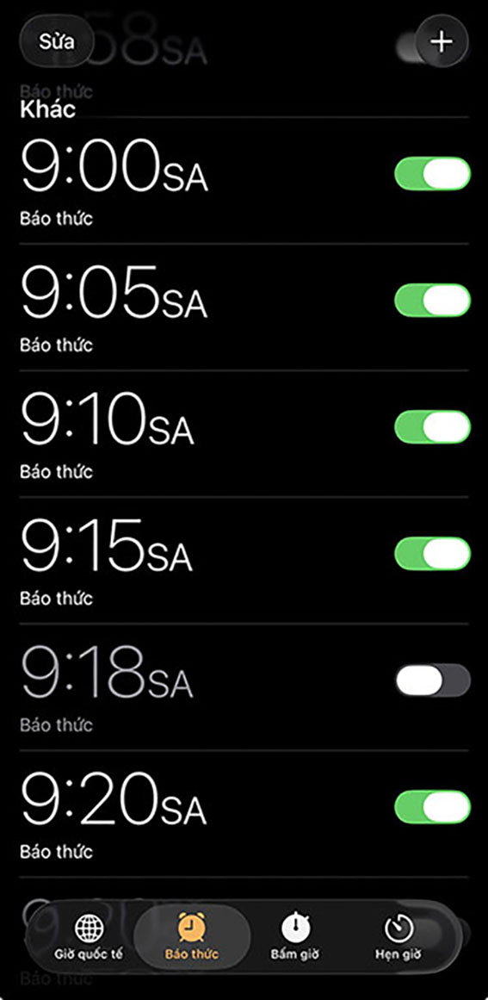
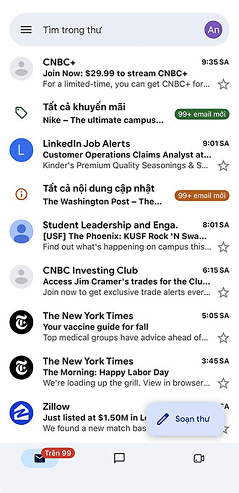
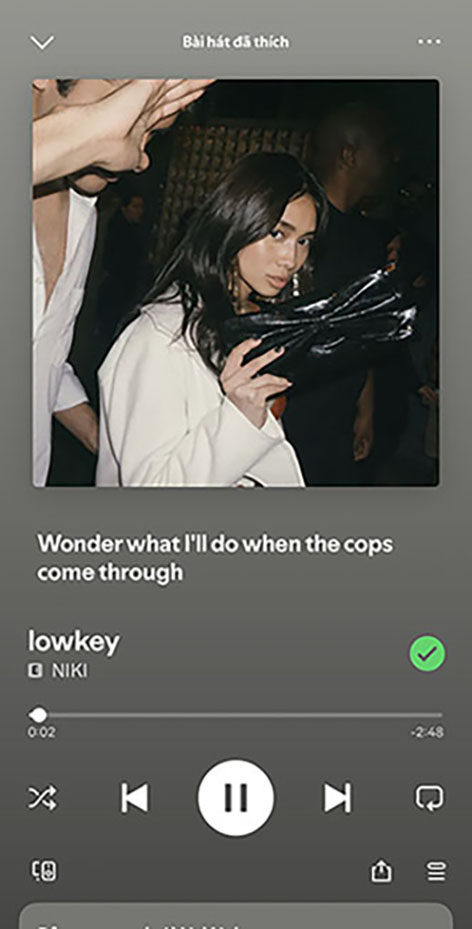
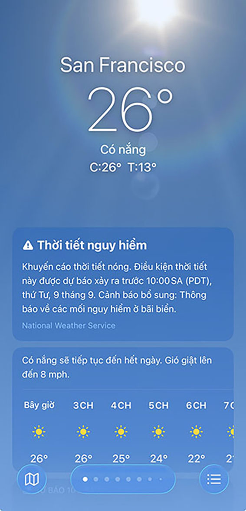
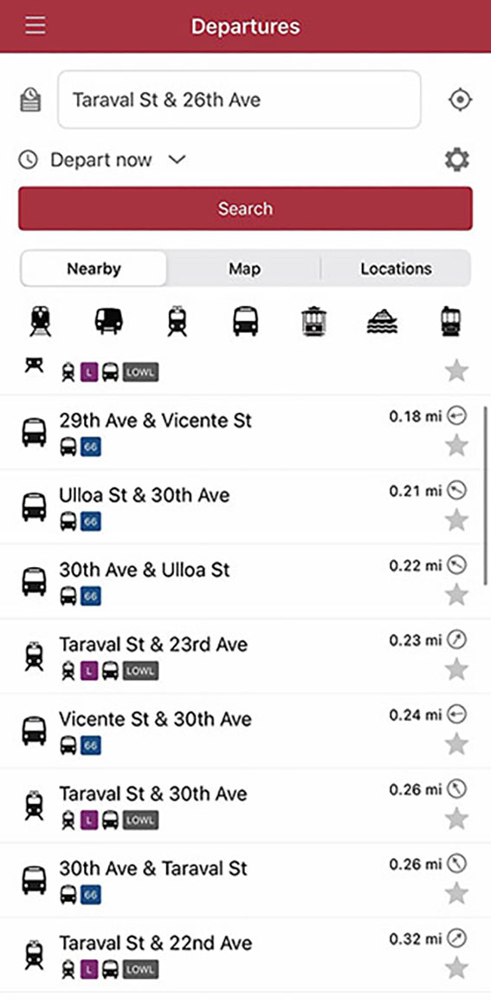
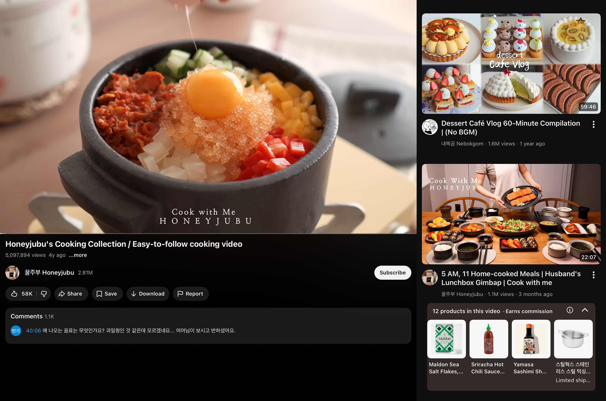
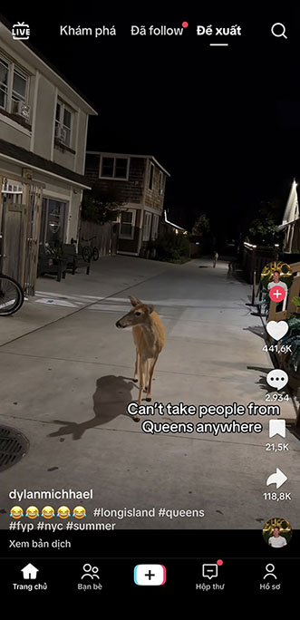
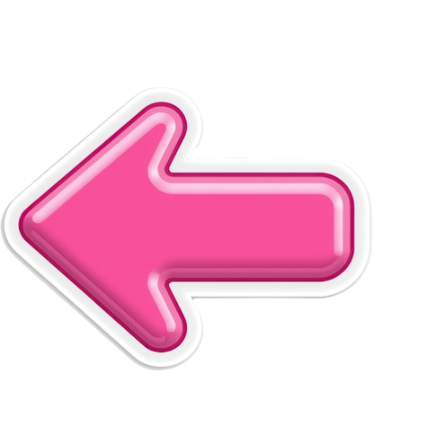
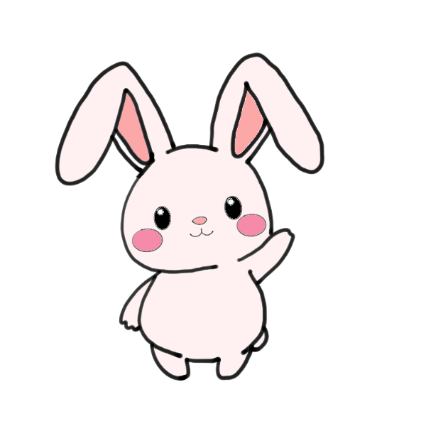

What does a normal day on my phone look like? Let's scroll through and see the digital moments that made up one day of my life.

My day starts with my phone alarm. I have a habit of setting multiple alarms because I'm scared I'll oversleep. I turn off my alarm and get up.

First thing in the morning, I check my email to make sure I'm not missing anything important.

Spotify!!! I usually listen to music while making breakfast. It helps me wake up and start my day.

Before I leave, I always check the weather to see what outfit I should wear.

I check the bus time before leaving. I don't want to miss it and end up waiting forever.
While sitting on the bus to the place, I'm playing my favorite game, Angry Birds.
I scroll Instagram when I'm bored. I always find something interesting and somehow I end up spending way more time on it than I expected. 😂 😂
Homework!!! After I get home, I start working on my assignment.
I decided to make Kimchi fried rice for dinner today. I searched for a recipe on Google, tried it out and surprisingly, it tasted really good!

I'm watching YouTube while having dinner. I love watching cooking videos these days.
Rabbit time 🐰 I was playing with my rabbit and it was so cute so I had to take a video of it.

Before going to sleep, I watch TikTok for a little bit. I've gotten so used to watching something before bed that it feels weird to sleep without it.

